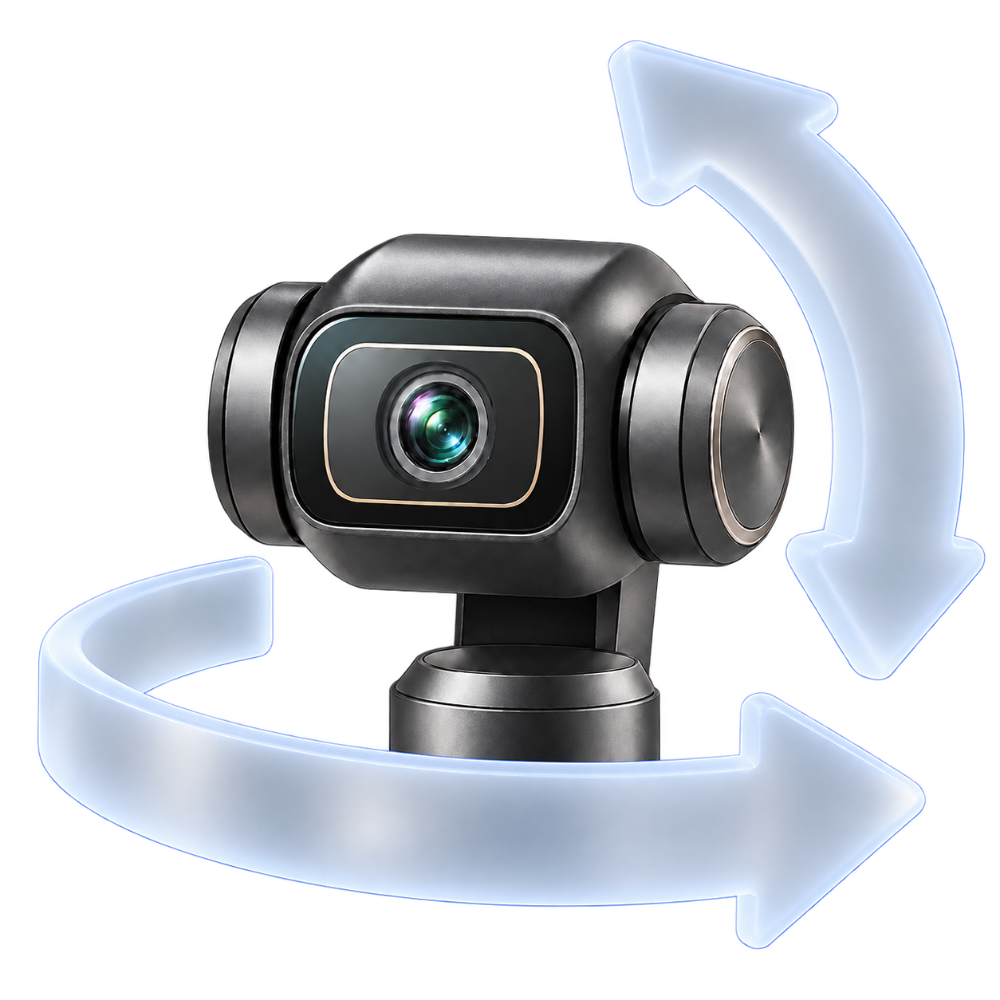

Twenty places to look
Capture the current pan, tilt and zoom. Name a preset, choose its transition and speeds, and keep your presets in a grid or compact list.

Osmo WebcamUSB CAMERA CONTROLS FOR MAC
Save the angles you use. Switch between them from your Mac or Stream Deck. Preview your Pocket camera directly over USB, with OBS optional.
Apple Silicon · macOS 26+ · Osmo Pocket 4
PAN TILT ZOOM
A BETTER WAY TO FRAME
Camera controls, saved presets and local integrations in one desktop app.
Capture the current pan, tilt and zoom. Name a preset, choose its transition and speeds, and keep your presets in a grid or compact list.
Adjust pan, tilt and zoom together, or recall a preset. Choose another preset during a transition to replace the current recall.
Pair the companion Stream Deck plugin from the app, then choose a named preset from one dropdown. Add hold-to-move pan/tilt and zoom, guarded Recenter or optional Stop. Local HTTP integrations can use twenty preset slots.
Explore integrationsUSB PREVIEW · OBS OPTIONAL
Use Pocket camera · USB for the built-in preview without OBS. If you use OBS for capture, select its Virtual Camera as an optional preview source. Camera controls work independently of preview.
No app account. No subscription. No cloud preset storage or automatic telemetry uploads.
How your data stays localDOWNLOADS
The desktop app and companion Stream Deck plugin are distributed here.
Build 39 · Apple Silicon · macOS 26+ · Stream Deck plugin 0.2.5
This release targets the configuration above. Validation covers one Mac and an existing macOS account; clean-account and second-Mac installation remain unverified. Intel Macs, older macOS, Windows, Linux, other cameras and other firmware versions are not supported by this build.
GETTING STARTED
Connect your Pocket 4 by USB in webcam mode. Choose Pocket camera · USB and enable preview, or use OBS Virtual Camera if OBS is capturing video.
Controls prepare when the camera connects, restarts or reconnects. Keep tracking off and a clear movement path.
Use Add Preset to capture your framing. Recall it in the app, then connect Stream Deck or your local software if you want.
GOOD TO KNOW
No. Camera controls and the direct USB preview work without OBS. If you use OBS for recording or streaming, OBS Virtual Camera is an optional preview source. Osmo Webcam does not record or stream video.
No Bluetooth connection or app account is required for USB controls or preview. Presets and credentials stay in your macOS user account. Update checks use GitHub.
Some motion features remain experimental. Review clearance for your fixed setup and keep tracking off. Camera readback and completed commands do not establish physical arrival or immediate motor stop. Press Escape in the app to cancel further motion scheduling. A Stream Deck Stop action is optional; held controls stop scheduling on release. A finite command already accepted by the camera may finish.
No. Built-in ActiveTrack and battery telemetry are not included in this release. Keep tracking off while using camera controls.
Use the public issue tracker. Include versions and the visible error code. Keep tokens, device identifiers and private recordings out of reports. See support for the details to include.